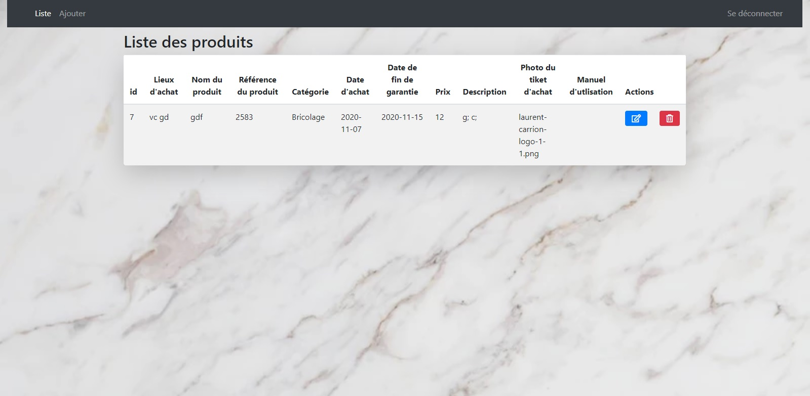

Projet Dashbord
Réalisation d’un projet Dashboard pour apprendre à utiliser le CRUD.
Avec une page connexion, Dashboard, ajouter, modifier.

Exercice Maquette Onepage
Le but de cet exercice était de choisir une maquette qui était proposée pour la réaliser entièrement en HTML Css.
Github - Exercice Onepage